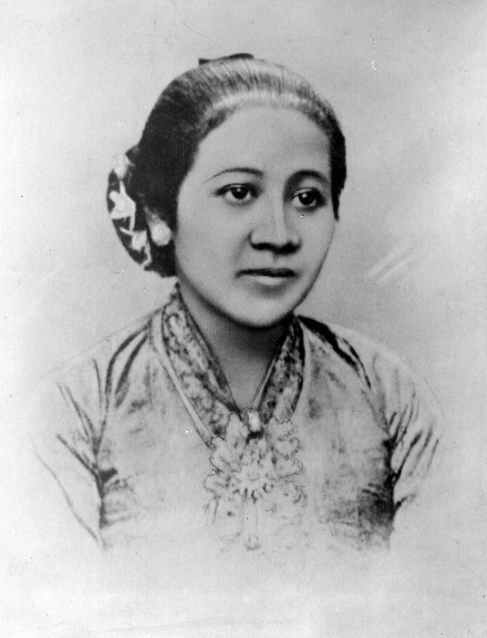

Biodata R.A.Kartini

Nama : Raden Adjeng Kartini
Tempat,Tanggal Lahir : Jepara,21 April 1879br
Wafat : 17 September 1904 (umur 25 tahun)
Pekerjaan : Pahlawan Nasional Indonesi
Dikenal sebagai : Emansipasi Wanita
Tahun Aktif :1903-1904
Orang tua : Raden Mas Adipati Ario Sosroningrat (ayah) dan M.A. Ngasirah (ibu)
Pasangan : Raden Adipati Joyodiningrat (suami)
Anak : Raden Mas Singgih Djojo Adipatiningrat
Pendidikan : Sekolah Belanda
Alamtat : Jepara, Jawa Tengah
Wafat di : Rembang, Jawa Tengah